01
Railway Heritage
Explore the railway identity that has long connected Narkatiaganj with the wider region.
WEST CHAMPARAN • BIHAR
A gateway to the Champaran region, where railway heritage, local markets, everyday traditions and the warmth of Bihar come together.
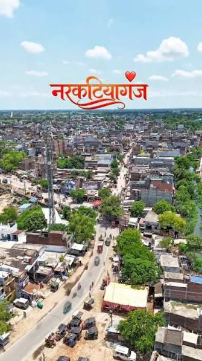
ABOUT THE TOWN
Narkatiaganj is a town and subdivision headquarters in West Champaran district of Bihar. Its location makes it an important regional link for people, commerce and travel across the Champaran area.
The town's identity is shaped by its railway connections, surrounding countryside, local markets and the culture of North Bihar. Use this landing page as an introduction, then replace the sample copy with your verified local research.
EXPLORE
Build your itinerary around the town, its markets, railway heritage and nearby Champaran attractions.
Explore the railway identity that has long connected Narkatiaganj with the wider region.
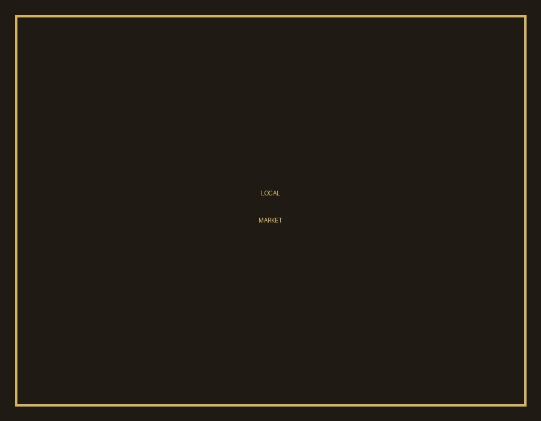
See everyday commerce, colorful shops, snacks and the lively rhythm of local town life.

Head beyond the town to experience green fields, village roads and the quieter side of Bihar.
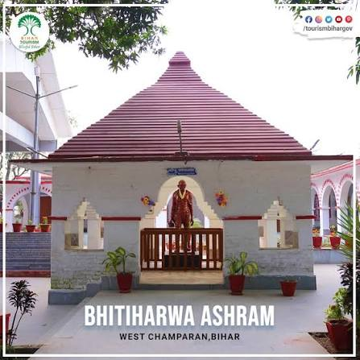
Use Narkatiaganj as a base for exploring attractions and heritage associated with the Champaran region.
LOCAL LIFE
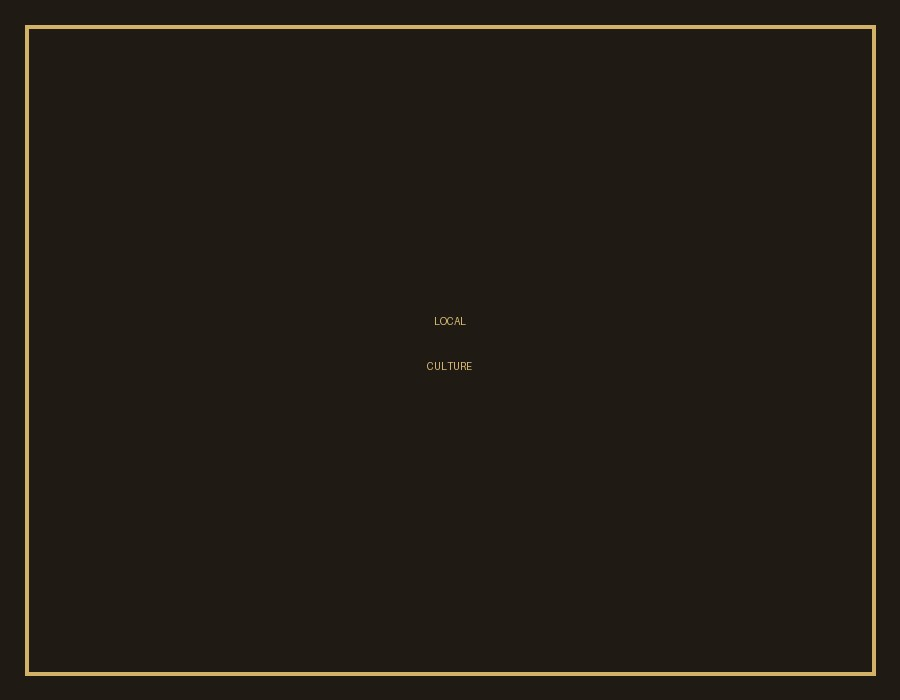
Festivals bring families and neighborhoods together through rituals, food, music and shared celebrations.
Morning markets, tea stalls, school routes, neighborhood conversations and village connections give the town its rhythm.
Local customs and family traditions connect generations and keep regional identity visible in daily life.
Simple, filling food and the warmth of local hospitality are an essential part of the visitor experience.
TASTE OF BIHAR
From classic Bihar dishes to market snacks, food is one of the easiest ways to experience local character.
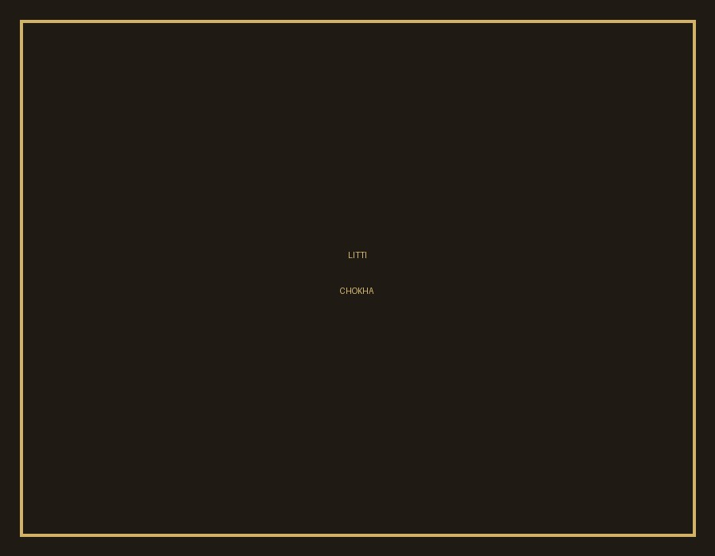
A Bihar classic made for a hearty, rustic meal.
A versatile regional staple enjoyed in drinks, fillings and meals.
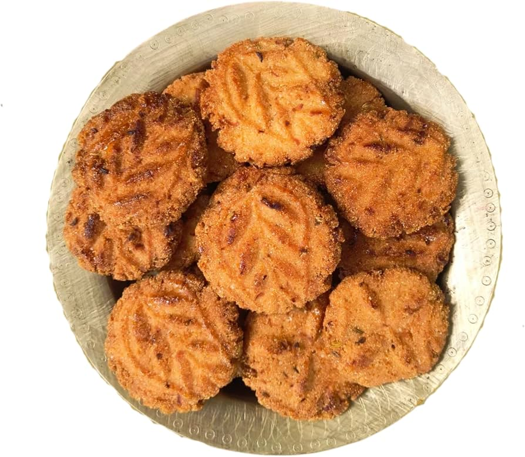
A traditional sweet snack closely associated with festive occasions.
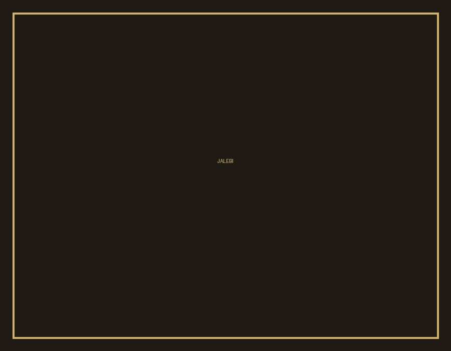
Sweet, crisp and perfect for a quick market-side treat.
PLAN YOUR JOURNEY
Narkatiaganj has an important railway presence in the region. Check current schedules and routes before travelling.
Road connections link the town with surrounding towns and cities. Verify current bus and road conditions before travel.
Use the town as a regional base when planning a wider West Champaran or Champaran trip.
LOCATION
For a live map, replace this panel with your preferred Google Maps or OpenStreetMap embed.
THE EXPERIENCE
Experience the town beyond tourist checklists — markets, streets, people and everyday moments.
Use Narkatiaganj as a gateway for discovering the wider region and its heritage.
Try regional favorites and simple market snacks that reflect the food culture of North Bihar.
From railway scenes to countryside landscapes, there are plenty of authentic moments to photograph.
Discover the warmth, conversations and traditions that make a place memorable.
VISUAL JOURNEY
Replace these sample images with your own original photographs of Narkatiaganj.
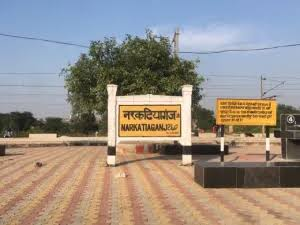
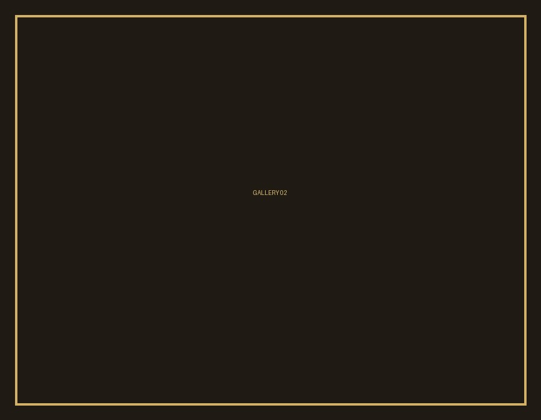


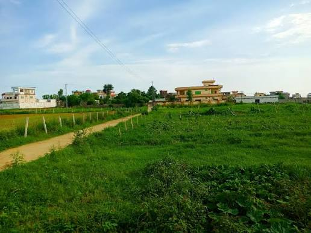
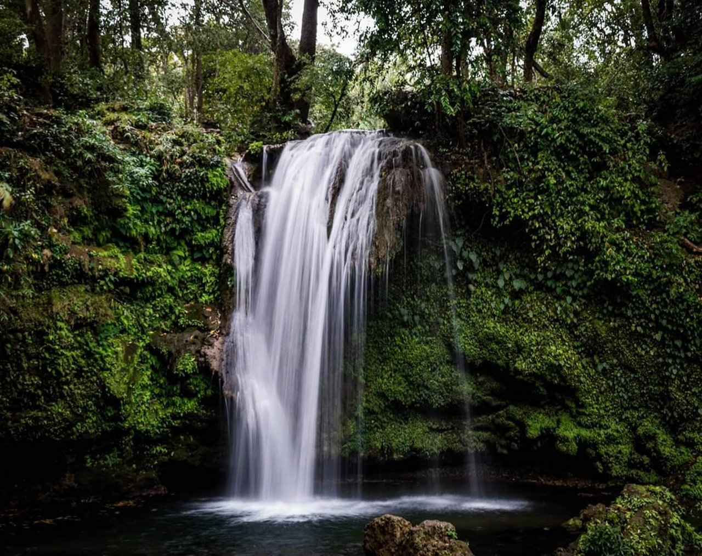
YOUR CHAMPARAN STORY STARTS HERE
Explore the town, taste the food, meet the people and discover the stories behind the place.
Explore Narkatiaganj ↑